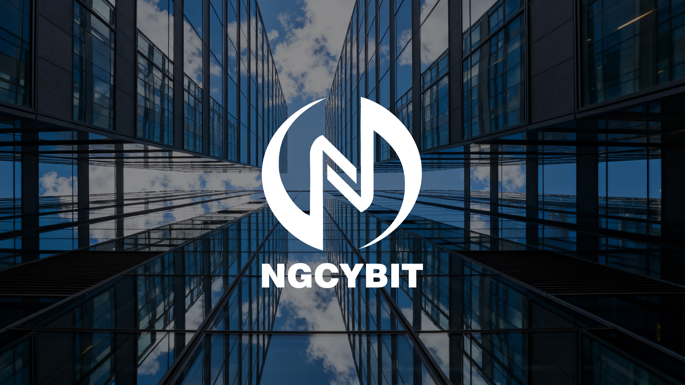

What Is NGCYBIT Exchange? A Clear Guide to the Platform Vision
A detailed introduction to the NGCYBIT Exchange vision, its user-centered design principles, technology approach, and place in the evolving digital asset landscape.
Read insightNGCYBIT Exchange Insights
Long-form guides that make digital asset systems, decisions, and responsibilities easier to examine.

Explore the purpose, mechanics, principles, and practical questions behind the platform vision.
Read the guide
A detailed introduction to the NGCYBIT Exchange vision, its user-centered design principles, technology approach, and place in the evolving digital asset landscape.
Read insight
Explore how NGCYBIT Exchange connects clear information, interface design, records, risk communication, and user education in a transparent trading experience.
Read insight
Learn how NGCYBIT Exchange frames account protection as a shared practice involving platform controls, user habits, verification, monitoring, and careful recovery.
Read insight
A beginner-friendly NGCYBIT Exchange guide to markets, order types, liquidity, volatility, personal planning, records, and responsible learning.
Read insight
See how NGCYBIT Exchange connects modular architecture, market data, performance, monitoring, product design, and measured innovation.
Read insight